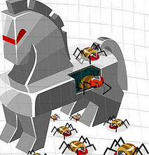
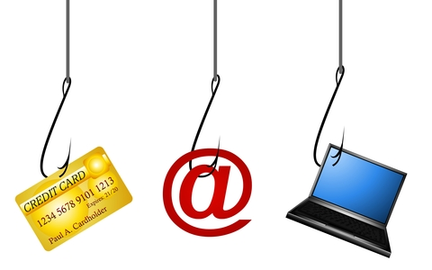
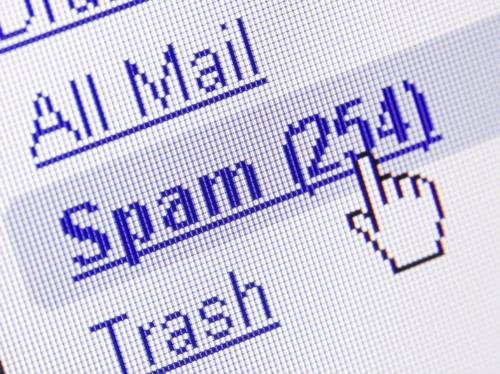

Tipos de Amenazas
Básicamente, podemos agrupar las amenazas a la información en cuatro categorías:
Factores Humanos; Fallas en los sistemas de procesamiento de información; Desastres naturales y Actos maliciosos o malintencionados
algunas de estas amenazas son:
Virus informáticos o código malicioso
Uso no autorizado de Sistemas Informáticos
Robo de Información
Fraudes basados en el uso de computadores
Suplantación de identidad
Denegación de Servicios (DoS)
Ataques de Fuerza Bruta
Alteración de la Información
Divulgación de Información
Desastres Naturales
Sabotaje, vandalismo
Espionaje
A continuación se presenta la descripción de algunas de de las principales amenazas:
Spywre (Programas espías): Código malicioso cuyo principal objetivo es recoger información sobre las actividades de un usuario en un computador para robar información personal Según estadísticas el 91% de los computadores tienen spyware instalado.
Troyanos, virus y gusanos: Son programas de código malicioso, que se alojan el los computadores con el fin de permitir el acceso a un atacante. El virus, tiene como objetivo principal dañar la información o generar el consumo de recursos malintencionada. La propagacion es casi siempre por medio de programas o archivos contaminados (un programa ejecutable, imagen, video, música, reproducciones flash, etc.).

Phishing: Es un ataque del tipo "ingeniería social", cuyo objetivo es obtener de datos confidenciales de un usuario, especialmente financieros. Actualmente, los ataques de phishing son bastante sofisticados, utilizando mensajes de correo electrónico y falsos sitios Web, que suplantan perfectamente a los sitios originales.

Spam: Recibo de mensajes no solicitados, estos mensajes son principalmente recibidos por correo electrónico, cuyo propósito es difundir mensajes comerciales o propagandas.
Para el año 2006, se tenía calculado que entre el 60 y el 70% de los correos electrónicos eran “spam”, con contenidos comerciales o de material pornográfico.
